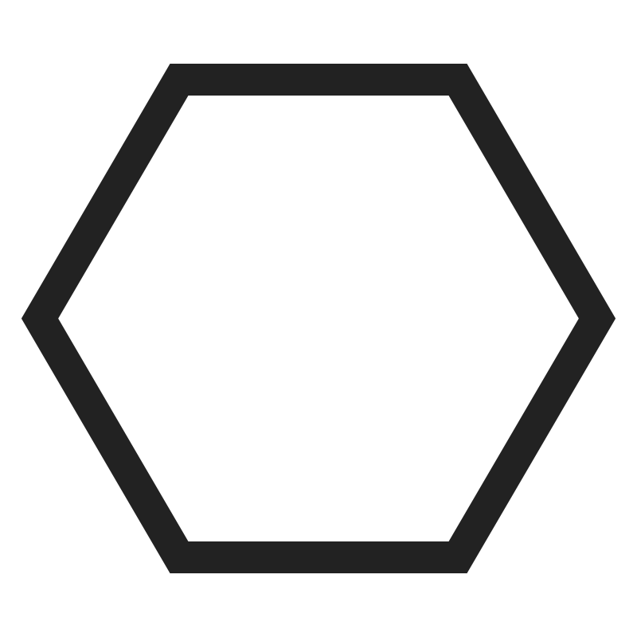
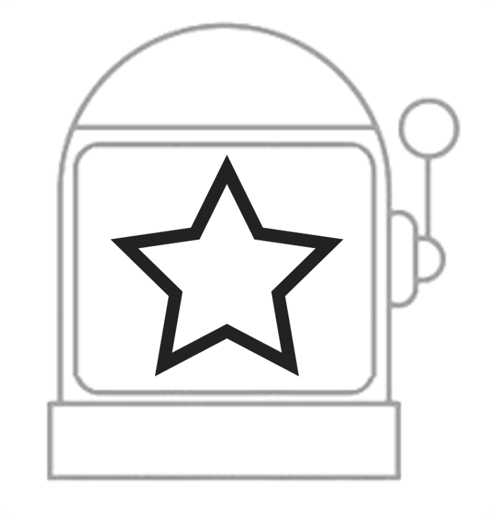
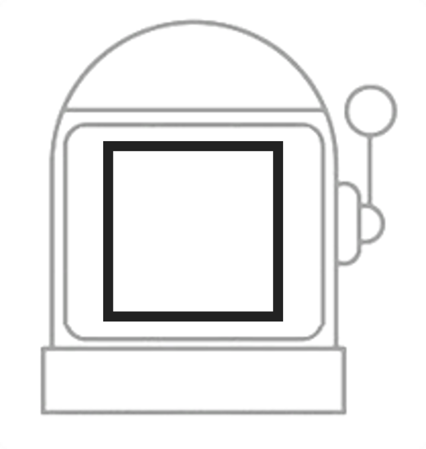
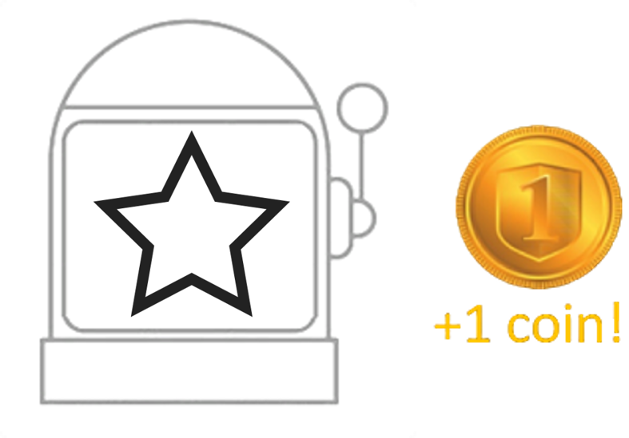
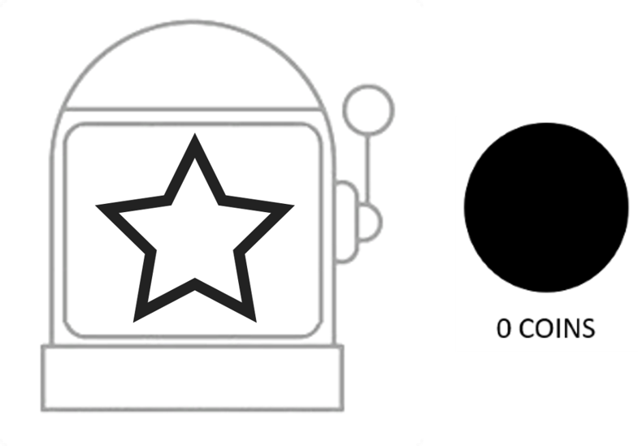
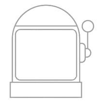

<!DOCTYPE html>
<html>

<head>
    <title>Game</title>
    
    <!--
    <script src="lib/vendors/jspsych-7.1.2/jspsych.js"></script>
    <script src="lib/vendors/jspsych-7.1.2/plugin-html-keyboard-response.js"></script>
    <script src="lib/vendors/jspsych-7.1.2/plugin-html-button-response.js"></script>
    <script src="lib/vendors/jspsych-7.1.2/plugin-preload.js"></script>
    <script src="lib/vendors/jspsych-7.1.2/plugin-fullscreen.js"></script>
    <script src="lib/vendors/jspsych-7.1.2/plugin-instructions.js"></script>
    <script src="lib/vendors/jspsych-7.1.2/plugin-survey-likert.js"></script>
    <script src="lib/vendors/jspsych-7.1.2/plugin-survey-text.js"></script>
    <script src="lib/vendors/jspsych-7.1.2/plugin-survey-multi-choice.js"></script>
    <link rel="stylesheet" href="lib/vendors/jspsych-7.1.2/jspsych.css">
    <link href="./css/my_exp.css" rel="stylesheet" type="text/css">
    <script type="text/javascript" src="lib/vendors/jquery-2.2.0.min.js"></script>
    <script type="text/javascript" src="jspsych/jspsych-7-pavlovia-2021.12.js"></script>-->

    <!-- local run-->
    <script src="jspsych/dist/jspsych.js"></script>
    <script src="jspsych/dist/plugin-html-keyboard-response.js"></script>
    <script src="jspsych/dist/plugin-html-button-response.js"></script>
    <script src="jspsych/dist/plugin-preload.js"></script>
    <script src="jspsych/dist/plugin-instructions.js"></script>
    <script src="jspsych/dist/plugin-survey-likert.js"></script>
    <script src="jspsych/dist/plugin-survey-text.js"></script>
    <script src="jspsych/dist/plugin-survey-multi-choice.js"></script>
    <script src="jspsych/dist/plugin-fullscreen.js"></script>
    <script src="jspsych/dist/plugin-html-slider-response.js"></script>
    <link href="jspsych/dist/jspsych.css" rel="stylesheet" type="text/css" />
    <link href="css/my_exp.css" rel="stylesheet" type="text/css"/>
</head>

<body>
    <script>

        /*this defines the css properties according to the window_screen_size*/
        var root = document.documentElement;
        var vis_angle_px = 105
        var square_width = 51.4
        root.style.setProperty('--top_middle', window.screen.height / 2 + "px");
        root.style.setProperty('--left_middle', window.screen.width / 2 - (square_width / 2) + "px");
        //---------------------------------------------------------------------------------------------
        root.style.setProperty('--left_card', window.screen.width / 2 - 2.3 * vis_angle_px + "px");
        root.style.setProperty('--right_card', window.screen.width / 2 - 2.3 * vis_angle_px + "px");
        root.style.setProperty('--top_card', window.screen.height / 2 - 90 + "px");
        root.style.setProperty('--top_reward', window.screen.height / 2 + "px");
        root.style.setProperty('--left_reward', window.screen.width / 2 + "px");
        root.style.setProperty('--top_surprise', window.screen.height / 2 + "px");
        root.style.setProperty('--left_surprise', window.screen.width / 2 + "px");

        var jsPsych = initJsPsych({
            /*download the data as csv
            */
            on_finish: function () {
                var csv = jsPsych.data.get().csv();
                var filename = 'data.csv';
                downloadCSV(csv, filename);
            }
         });
        // capture info from Prolific
        var subject_id = jsPsych.data.getURLVariable('PROLIFIC_PID');
        if (subject_id==undefined){
            subject_id="DEMO"
        }

        jsPsych.data.addProperties({
        subject_id: subject_id,
        });
        /*---------------------------------------------------- 
        Card game starts
        ------------------------------------------------------*/
        /*full screen */
        var tau_logo = 'images/tau_logo.jpg'
        var enter_fullscreen = {
            type: jsPsychFullscreen,
            fullscreen_mode: true,
            message: '<p>This experiment will be in fullscreen mode. <br> <b>Please make sure your browser is on 100% zoom, and your keyboard is on the English language.</b></p>'
               ,button_label: "My browser is on 100% zoom and my keyboard is set to English. Let's start!"
               }
        var criteria= {
            type: jsPsychHtmlButtonResponse,
            choices: ["I confirm", "<a href='https://www.prolific.co/' >Press here to quit the experiment</a>"],
            stimulus: "<p style='text-align: left'><strong>  <br><br> Greetings and thank you for your willingness to participate in this research.</strong> This study aims to examine learning mechanisms. Specifically, it seeks to improve and strengthen the diagnosis and treatment of mental disorders in the future. Hence, your participation is highly valued and contributes significantly.</p>" +
    
    "<p style='text-align: left'>For your participation, you will receive monetary compensation. Additionally, you could win a cash bonus based on your performance. Finally, at the end of the experiment, we would appreciate discussing the research questions further and sharing the results with you.</p>" +
    
            "<p style='text-align: left'><u>You can participate in this experiment only if you answer all the following criteria:</u></p> "+
                     "<p style='text-align: left'>1.You are aged between 18 and 50</p>"+
                     "<p style='text-align: left'>2.You are not currently diagnosed with any neurlogical or psychiatric condition</p>"+
                     "<p style='text-align: left'>3.You never had a brain injury</p>"+
                     "<p style='text-align: left'>4.You have no form of color vision deficiency</p>"}

        var consent = {
        type: jsPsychHtmlButtonResponse,
        choices: ["I have read, understand, and agree to the above", "<a href='https://www.prolific.co/' >Press here to quit the experiment</a>"],
        stimulus:"<h3><b>Consent to participate in a research:</b></h2>" +
"<p style='text-align: left'><b>Participation Criteria:</b></p>" +

"<p style='text-align: left'>The experiment is intended for young adults aged <strong>18 to 50</strong>. You cannot participate if you regularly use psychiatric or neurological medications, have a psychiatric/neurological diagnosis (including attention deficit hyperactivity disorder - ADHD), a history of head injuries, epilepsy, learning disabilities, or color blindness.</p>" +

"<p style='text-align: left'><b>Procedure:</b></p>" +

"<p style='text-align: left'>Upon completion of participation, compensation will be provided as agreed, and we will offer a full debriefing regarding the research goals and hypotheses. There are no expected risks, besides potential discomfort during the performance of the computer task. You have the right to withdraw from the experiment at any stage. In case of withdrawal, partial compensation will be provided based on the duration of your participation.</p>" +

"<p style='text-align: left'>The study will be conducted online using your computer at home. During the experiment, we will track your learning patterns through a simple computer game. The game will display images on the screen, and you will make choices during the game to maximize profits according to rules explained during the experiment itself. The experiment is expected to take about 10 minutes.</p>" +

"<p style='text-align: left'><b>Compensation for Participation:</b></p>" +

"<p style='text-align: left'>For completing the experiment, &pound6 per hour will be given. In addition, a cash prize will be awarded based on performance in the task. Throughout the task, you can collect points (gold coins). At the end of the task, the number of points you have accumulated will be calculated. The amount of points depends on your ability to perform the experiment well, similar to scoring in a computer game.</p>" +

"<p style='text-align: left'><b>Anonymity and Data Protection:</b></p>" +

"<p style='text-align: left'>The information collected during the experiment will be kept solely on the lab computers and will be linked only to a participant number.</p>"}
       
        var start_feedback = {
            type: jsPsychHtmlKeyboardResponse,
            stimulus: 'Please take a couple of minutes to tell us <b>what you liked and disliked about the experiment.</b><br> Your honest and detailed feedback is incredibly valuable to us and will greatly contribute to our research.<br> <br> <b>Press any key to continue</b>'
        }
        
        var get_feedback_required = {
        type: jsPsychSurveyText,
        questions: [
            {prompt: 'Were the instructions for the game clear?<br> <b>Please explain your answer</b>', required: true},
            /*{prompt: 'Were the instructions about the shapes clear?<br> <b>Please explain your answer</b>', required: true},*/
            {prompt: 'Were you convinced along the first round that the key respone or the slot machine indeed have no meaning in terms of coin winning chances?<br> <b>Please explain your answer</b>', required: true},
            {prompt: 'Could you explain your feelings throughout completing the task?<br> <b>Please explain your answer</b>', required: true},
            {prompt: 'Did you feel like you managed to learn which shapes are better along the first round?<br> <b>Please explain your answer</b>', required: true},
            {prompt: 'What was your experience while choosing the shapes? How confusing was it?<br> <b>Please explain your answer</b>', required: true},
            {prompt: 'Do you think you would act differently had more money was offered for every coin you earn?<br><b>Please explain your answer</b>', required: true},
            {prompt: 'Did you feel as if you were tricked in some way during the experiment?<br><b>Please explain your answer</b>', required: true}]
        }

        var get_feedback_optional = {
        type: jsPsychSurveyText,
        questions: [
            {prompt: 'Do you think any graphical detail could be improved? <br> <b>Please explain your answer</b>', required: false},
            {prompt: 'Do you think any technical detail could be improved? <br> <b>Please explain your answer</b>', required: false},
            {prompt: 'Do you have any additional suggestions or feedback for us?<br> <b>Please explain your answer</b>', required: false}]
        }

    //     var labels_spq= [
    //     "Strongly Disagree", 
    //     "Disagree", 
    //     "Neutral", 
    //     "Agree", 
    //     "Strongly Agree"
    //   ]
    //     var start_spq = {
    //         type: jsPsychHtmlKeyboardResponse,
    //         stimulus: 'We will now ask you to answer a questionnaire. Please be sure that all data is saved anonymously</b> <br> <br> <b>Press any key to continue</b>'
    //     }
    //     var spq = {
    //     type: jsPsychSurveyLikert,
    //     questions: [
    //         {prompt: "Do you sometimes feel that people are talking about you?",labels: labels_spq, required: true},
    //         {prompt: "Do you sometimes feel that other people are watching you?",labels: labels_spq, required: true},
    //         {prompt: "When shopping, do you get the feeling that other people are taking notice of you?",labels: labels_spq, required: true},
    //         {prompt: "I often feel that others have it in for me. (Others trying to make things difficult for me.)",labels: labels_spq, required: true},
    //         {prompt: 'Do you often have to keep an eye out to stop people from taking advantage of you?',labels: labels_spq, required: true},
    //         {prompt: 'Do you feel that you cannot get "close" to people?',labels: labels_spq, required: true},
    //         {prompt: 'I find it hard to be emotionally close to other people.',labels: labels_spq, required: true},
    //         {prompt: 'Do you feel that there is no one you are really close to outside of your immediate family, or people you can confide in or talk to about personal problems?',labels: labels_spq, required: true},
    //         {prompt: 'I tend to keep my feelings to myself.',labels: labels_spq, required: true},
    //         {prompt: 'I rarely laugh and smile.',labels: labels_spq, required: true},
    //         {prompt: 'I am not good at expressing my true feelings by the way I talk and look.',labels: labels_spq, required: true},
    //         {prompt: 'Other people see me as slightly eccentric (odd).',labels: labels_spq, required: true},
    //         {prompt: 'I am an odd, unusual person.',labels: labels_spq, required: true},
    //         {prompt: 'I have some eccentric (odd) habits.',labels: labels_spq, required: true},
    //         {prompt: 'People sometimes comment on my unusual mannerisms and habits.',labels: labels_spq, required: true},
    //         {prompt: 'Do you often feel nervous when you are in a group of unfamiliar people?',labels: labels_spq, required: true},
    //         {prompt: 'I get anxious when meeting people for the first time.',labels: labels_spq, required: true},
    //         {prompt: 'I feel very uncomfortable in social situations involving unfamiliar people.',labels: labels_spq, required: true},
    //         {prompt: 'I sometimes avoid going to places where there will be many people because I will get anxious.',labels: labels_spq, required: true},
    //         {prompt: 'Do you believe in telepathy (mind-reading)?',labels: labels_spq, required: true},
    //         {prompt: 'Do you believe in clairvoyance (psychic forces, fortune telling)?',labels: labels_spq, required: true},
    //         {prompt: "Have you had experiences with astrology, seeing the future, UFO's, ESP, or a sixth sense?",labels: labels_spq, required: true},
    //         {prompt: 'Have you ever felt that you are communicating with another person telepathically (by mind-reading)?',labels: labels_spq, required: true},
    //         {prompt: 'I sometimes jump quickly from one topic to another when speaking.',labels: labels_spq, required: true},
    //         {prompt: 'Do you tend to wander off the topic when having a conversation?',labels: labels_spq, required: true},
    //         {prompt: 'I often ramble on too much when speaking.',labels: labels_spq, required: true},
    //         {prompt: 'I sometimes forget what I am trying to say.',labels: labels_spq, required: true},
    //         {prompt: 'I often hear a voice speaking my thoughts aloud.',labels: labels_spq, required: true},
    //         {prompt: 'When you look at a person or yourself in a mirror, have you ever seen the face change right before your eyes?',labels: labels_spq, required: true},
    //         {prompt: 'Are your thoughts sometimes so strong that you can almost hear them?',labels: labels_spq, required: true},
    //         {prompt: 'Do everyday things seem unusually large or small?',labels: labels_spq, required: true}
    //     ]
    //     }
        /*---------------------------------------------------- 
        Define images
        ------------------------------------------------------*/
        var instructions_images = ['images/slot_new/practice/p1.png','images/slot_new/practice/p2.png','images/slot_new/practice/p3.png','images/slot_new/practice/p4.png', 'images/slot_new/practice/1.png', 'images/slot_new/practice/2.png', 'images/slot_new/practice/reward_example1.png', 'images/slot_new/practice/reward_example2.png']
        var practice_deck_images = ['images/slot_new/practice/1.png', 'images/slot_new/practice/2.png', 'images/slot_new/practice/3.png', 'images/slot_new/practice/4.png']
        var test_deck_images = ['images/slot_new/test/1.png', 'images/slot_new/test/2.png', 'images/slot_new/test/3.png', 'images/slot_new/test/4.png', 'images/slot_new/test/5.png', 'images/slot_new/test/6.png', 'images/slot_new/test/7.png', 'images/slot_new/test/8.png']
        var reward_images = ['images/zero_coins.png', 'images/won1-no-back1.png']
        var fixation = '<div class="fixation">+</div>'
        var surprise= 'images/surprise.jpg'
        /*----------------------------------------------------
        Define game-related settings
        ------------------------------------------------------*/
        var block_type=Number(jsPsych.randomization.sampleWithoutReplacement([0,1/*,2,3*/], 1));
        var trial_type=0;
        //0-A B, 1- C D, 2-catch trial
        var catch_trials1 = [21, 23, 25, 27, 29, 31, 32, 33, 34, 37, 39, 42, 43, 44, 46, 49]
        var catch_trials2 = [22, 23, 24, 25, 31, 32, 33, 34, 35, 37, 40, 41, 42, 43, 46, 48]
        var trial_order = create_trial_order()
        var catch_trials_number = 0;
        var sum_reward_catch_trials=0;
        var sum_reward_test_trials=0;
        var practice_number=-1;
        var practice_type;
        var invalid=false;
        var sum_reward_all=0;
        /*---------------------------------------------------- 
        Start instructions
        ------------------------------------------------------*/
        var instructions_cards = {
            on_start: function () {
                 {
                    document.body.style.cursor = 'auto';
                }
            },
            type: jsPsychInstructions,
            pages: ["<p><b><u>Welcome to the 'Form & Fortune' game</u></b></p>",
                "<p style='text-align:center'>Your winnings in this game will earn you additional payment bonus for the study.",
                "<p style='text-align:center'>If no extra money will be earned in the game, you will still get &pound1 for completing this experiment.",
                "<p style='text-align:center'>However,<b> you can gain up to an extra &pound0.5 based on winnings in the game.</b>",
                "<p style='text-align:center'>We will now provide instructions regarding the 'Form & Fortune' game. <b>Please read them carefully.</b>",
                "<p style='text-align:center'>Feel free to go back and forth between the screens to make sure you've got everything clear.",
                "<p style='text-align:left'>At the end of the instructions, <b>we will ask you to complete a short quiz about them</b>, to make sure everything is well understood.</p>",
                "<p style='text-align:center'>Below is an example of four different shapes, very much like those in the game to follow.</p>" +
                ""+""+
                ""+"",
                "<p style='text-align:center'>At each round, two slot machines will be presented, each offering one of the four shapes (as shown in the example below).</p>"
                + ""+ "",
                "<p style='text-align:center'>You will be able to select the <b>shape on the left machine by pressing 'S'</b> and the <b>shape on the right machine by pressing 'K'</b> on your keyboard.</p>"
                + ""+ "",
                "<p style='text-align:center'>After selecting the shape, you will see an outcome in the middle of the screen.</p>"
                + "<br>",
                "<p style='text-align:center'><b>The outcome could be a +1 golden coin</b>, as shown below, or...</p>"
                + "<br>",
                "<p style='text-align:center'>...it could be a <b>0 coin</b>, as shown here.</p>"
                + "<br>",
                "<p style='text-align:center'><b>Winning coins depends only on the shape you chose.</b></p>",
                "<p style='text-align:center'>Keep in mind each shape has <b>its own chance of winning a coin.</b>",
                "<p style='text-align:center'>This means you might find out that some shapes reward you with coins more frequently, while others may not.",
                "<p style='text-align:center'>Even though each shape has its own chance of winning a coin, <b>learning how often one wins won't tell you anything about the others.</b>",
                "<p style='text-align:center'>It could be that, <b>by chance,</b> a shape with high chances of winning a coin <b>will not give you one.</b>",
                "<p style='text-align:center'>In the same way, a shape with low chances of winning a coin <b>could sometimes</b> surprise you with a win.",
                "<p style='text-align:center'>As you play, it's important to know that your chance of winning coins <b>depends only on the shape you choose.</b>",
                "<p style='text-align:center'>Other details, like which side of the screen a shape is on or which slot machine shows it, <b>won't change how often you win.</b>",
                "<p style='text-align:center'>You'll go through 2 phases, and each phase involves a different number of rounds.</p>",
                "<p style='text-align:center'>For each phase, you'll see new shapes to choose from at every round.",
                "<p style='text-align:center'>After completing each phase, we'll show you the total coins you've earned from making your selections along all the rounds on that phase.",
                "<p style='text-align:center'>Note that, <b>once a phase starts, the coin winning chance of any particular shape doesn't change until the phase ends.</b>",
                "<p style='text-align:center'><b><u>Two important things to remember</u></b><br>",
                "<p style='text-align:center'><b>1. Winning coins depends only on the shapes</b><br> The machine displays them or which button you press doesn't matter. The important thing is the shape you choose.",
                "<p style='text-align:center'><b>2. Each shape has its own separate chance of winning coins</b><br> The winning chance of one shape doesn't provide any clues about the chances of the others.",
                "<p style='text-align:center'><b>Please do your best to respond as fast as you can while trying to earn as many coins as possible.</b>"],
                show_clickable_nav: true
        };

        var start_instructions_test = {
            on_start: function () {
                    document.body.style.cursor = 'auto';
            },
            type: jsPsychHtmlKeyboardResponse,
            stimulus: "<p> <br><br> You will now move on to a quick quiz to make sure you understood the instructions. If you make a mistake, you will need to go through the instructions again. <br><br> <b> Press any key to continue</b></p>"
        }
        var Q1_2_options = ["2", "4", "6"];
        var Q3_options = ["Click on it", "Press the LEFT or RIGHT arrow keys", "Press the 'S' or 'K' button"];
        var Q4_5_6_options = ["True", "False"];
        var Q7_options = ["True - the response keys are related to the winning chances", "False - you won't win more or less using RIGHT or LEFT response keys. Only the shapes are related to your chance of winning"];
        var Q8_options = ["Seeing as many shapes as possible", "Winning as many coins as possible"];
        var Q9_options = ["After choosing the shape", "At the end of each part of the experiment", "At the end of the game", "Never"];

        var instructions_test = {
            type: jsPsychSurveyMultiChoice,
            questions: [
                { prompt: "In each phase, how many different shapes will you see?", name: 'number_shapes_phase', correct: '4', options: Q1_2_options, required: true },
                { prompt: "In each round, how many shapes can you choose from?", name: 'number_shapes_round', correct: '2', options: Q1_2_options, required: true },
                { prompt: "How do you choose a shape?", name: 'choose_shape', correct: "Press the 'S' or 'K' button", options: Q3_options, required: true },
                { prompt: "Some shapes have a higher chance of winning coins than others.", name: 'better_shapes', correct: 'True', options: Q4_5_6_options, required: true },
                { prompt: "A shape's chance of winning coins stays the same during the phase.", name: 'value_change', correct: 'False', options: Q4_5_6_options, required: true },
                { prompt: "If one shape often leads to winning a coin, the other shapes will lead to winning coins less often.", name: 'value_independence', correct: 'False', options: Q4_5_6_options, required: true },
                { prompt: "Pressing the RIGHT ('K') key instead of the LEFT ('S') might help you win more.", name: 'location_value', correct: "False - you won't win more or less using RIGHT or LEFT response keys. Only the shapes are related to your chance of winning", options: Q7_options, required: true },
                { prompt: "What's the main goal of the game?", name: 'game_goal', correct: 'Winning as many coins as possible', options: Q8_options, required: true }

            ],
        };

        var if_trial = {
            type: jsPsychHtmlButtonResponse,
            stimulus: "<p>Sorry. You made a mistake.<br>"
                + "Let's go back to the instructions. "
                + "Please read them carefully before submitting your answers. <br>"
                + "Thank you!",
            choices: ['Back to instructions'],
            on_finish: function () {
                practice_number=-1;
                trial_type=0;
                catch_trials_number=0;
            }
        }
        var dominant_hand = {
        type: jsPsychSurveyMultiChoice,
        on_start: function () {
                    document.body.style.cursor = 'auto';
            },
        questions: [
        {
        prompt: "What hand do you use for Writing?", 
        name: 'dominant_hand_writing', 
        options: ['Always right', 'Usually right', 'Both equally', "Usually left","Always left"], 
        required: true
        },
        {
        prompt: "What hand do you use for Throwing?", 
        name: 'dominant_hand_throwing', 
        options: ['Always right', 'Usually right', 'Both equally', "Usually left","Always left"], 
        required: true
        },
        {
        prompt: "What hand do you use for Toothbrush?", 
        name: 'dominant_hand_toothbrush', 
        options: ['Always right', 'Usually right', 'Both equally', "Usually left","Always left"], 
        required: true
        },
        {
        prompt: "What hand do you use for Spoon?", 
        name: 'dominant_hand_spoon', 
        options: ['Always right', 'Usually right', 'Both equally', "Usually left","Always left"], 
        required: true
        }
    ]
        };

    var frustration = {
    type: jsPsychSurveyLikert,
    questions: [
    {
      prompt: "Please rate how frustrated you currently feel about part of the task you just completed.", 
      labels: [
        "Not at all frustrated", 
        "Slightly frustrated", 
        "Moderately frustrated", 
        "Very frustrated", 
        "Extremely frustrated"
      ],required: true
    }
    ],
    on_finish:function () {
        document.body.style.cursor = 'none';
    }
        };
        var to_repeat;
        var check_answers = {
            timeline: [if_trial],
            conditional_function: function () {
                // get the data from the previous trial,
                // and check which key was pressed
                to_repeat = false;
                var responses_to_test = jsPsych.data.getLastTrialData().trials[0].response
                for (i = 0; i < instructions_test.questions.length; i++) {
                    current_name = instructions_test.questions[i].name;
                    current_correct = instructions_test.questions[i].correct
                    if (current_correct != responses_to_test[current_name]) {
                        to_repeat = true;
                        return to_repeat
                    }
                    else {
                        to_repeat = false;

                    }
                }
                return to_repeat
            }
        }
        /*---------------------------------------------------- 
        Functions for card game
        ------------------------------------------------------*/
        function create_trial_order() {
            chosen_indexes = jsPsych.randomization.sampleWithoutReplacement([1,2], 1)
            if (chosen_indexes == 1){
                catch_trial_indexes = catch_trials1
            }
            else{
                catch_trial_indexes = catch_trials2
            }
            other_trials = jsPsych.randomization.shuffle([0,0,0,0,0,0,0,0,0,0,0,0,0,0,0,0,0,1,1,1,1,1,1,1,1,1,1,1,1,1,1,1,1,1])
            for (var i = 0; i < 16; i++){
                idx = catch_trial_indexes[i]
                other_trials.splice(idx, 0, 2) //insert catch trial at index idx
            }
            return other_trials
        }

        function draw_show_cards(deck, practice) {
            if (practice==1){ //practice only cards
                drawn= jsPsych.randomization.sampleWithoutReplacement([0,2],1);
                if (drawn==0){
                    arr= jsPsych.randomization.shuffle([deck[0], deck[1]]);
                }
                else{
                    arr= jsPsych.randomization.shuffle([deck[2], deck[3]]);
                }
                left_card=arr[0];
                right_card=arr[1];
                left_with_tag = ""
                right_with_tag = ""
                return left_with_tag + right_with_tag + fixation;
            }
            if (practice==2){ //full practice
                trial_type=jsPsych.randomization.sampleWithoutReplacement([0,1],1);
            }
            if (trial_type==0){ //A B
                arr= jsPsych.randomization.shuffle([deck[0],deck[1]])
                left_card=arr[0];
                right_card=arr[1];
                left_with_tag = ""
                right_with_tag = ""
            }
            else {// C D
                arr= jsPsych.randomization.shuffle([deck[2],deck[3]])
                left_card=arr[0];
                right_card=arr[1];
                left_with_tag = ""
                right_with_tag = ""
            }
            // else{ // catch trial
            //     left_card= catch_deck[catch_trials_number]
            //     right_card= catch_deck[catch_trials_number+1]
            //     catch_trials_number+=2;
            //     left_with_tag = ""
            //     right_with_tag = ""
                

            //}

            return left_with_tag + right_with_tag + fixation;
        }

        function show_choice() {
            last_choice = jsPsych.data.getLastTrialData().values()[0].response
            if (last_choice == 's') { 
                selected = 0
                card_to_show = ""
            }
            else if (last_choice == 'k') {
                selected = 1
                    card_to_show = ""
                
            }
            else {
                selected = null
                reward = 0
                if (last_choice!=null){
                    invalid=true;
                    return '<div style="font-size:40px;">Please press S or K.</div>'
                }
                else{
                    return '<div style="font-size:40px;">Please respond faster!</div>'
                }
            }
            return card_to_show + fixation
        }

        function show_reward (){
            key_selected = jsPsych.data.getLastTrialData().values()[0].key_selected
            if (key_selected == 0) {    

            card_to_show = ""
                
            }
            else if (key_selected == 1) {
            card_to_show = ""
            }
            else{
                if (invalid==true){
                    invalid=false;
                    return '<div style="font-size:40px;">Please press S or K.</div>'
                }
                else{
                    return '<div style="font-size:40px;">Please respond faster!</div>'
                }
            }
            card_selected = jsPsych.data.getLastTrialData().values()[0].card_selected
            if (trial_type == 2){
                prob_reward = 0.5;
            }
            else{
                prob_reward = FB_array[card_selected+block_type*4];
            }
            prob_unreward = 1 - prob_reward;
            reward = jsPsych.randomization.sampleWithReplacement([0, 1], 1, [prob_unreward, prob_reward])[0];
            reward_to_show = ""
            if (trial_type == 2){
                surprise_to_show = ""
                if(practice_type==0){
                    sum_reward_catch_trials+=reward;
                    sum_reward_all+=reward;
                }
                return card_to_show + surprise_to_show
            }
            else{
                if(practice_type==0){
                    sum_reward_test_trials+=reward;
                    sum_reward_all+=reward;
                }
                return card_to_show + reward_to_show
            }
        }

        function images_for_block_start() {
            images = test_deck_images.slice(block_type * 4, block_type * 4 + 4)
            return images
        }

        /*This function downloads the data */
        var subN = 999
        var IDsub = Date.now();

        /*a function that downloads locally the data as csv using hiddenElement*/
        function downloadCSV(csv, filename) {
            var csvFile;
            var downloadLink;
            // CSV file
            csvFile = new Blob([csv], { type: "text/csv" });
            // Download link
            downloadLink = document.createElement("a");
            // File name
            downloadLink.download = filename;
            // Create a link to the file
            downloadLink.href = window.URL.createObjectURL(csvFile);
            // Hide download link
            downloadLink.style.display = "none";
            // Add the link to DOM
            document.body.appendChild(downloadLink);
            // Click download link
            downloadLink.click();
        }
        /*---------------------------------------------------- 
        Variables for card game
        ------------------------------------------------------*/
        var FB_array = [0.4,0.2,0.4,0.2,0.4,0.2,0.4,0.2];
        var current_cards_practice_trial = 0;
        var current_cards_exp_trial = 0;
        var block = 0;
        var blocks = 2;
        var left_card;
        var right_card;
        var selected;
        var reward;

        /*---------------------------------------------------- 
        Start practice
        ------------------------------------------------------*/
        var timeline = [];
        
        /*init connection with pavlovia.org
        var pavlovia_init = {
			type: jsPsychPavlovia,
			command: "init"

        };
        timeline.push(pavlovia_init);*/
        var preload = {
        type: jsPsychPreload,
        images: [instructions_images,practice_deck_images, test_deck_images, reward_images, surprise,tau_logo]
        };
        timeline.push(preload)
        timeline.push(criteria)
        timeline.push(consent)
       timeline.push(enter_fullscreen)
        var start_practice_only_cards = {
            type: jsPsychHtmlKeyboardResponse,
            stimulus: "<div>We will now start a few practice trials. <br> Please be ready with your fingers on <b>'S'</b> and <b>'K'</b>. <br><br> <b> Press any key to begin</b></div>",
            post_trial_gap: 1000,
            on_finish: function () { 
                practice_type=1;
                document.body.style.cursor = 'none'; 
            },
        }
        var start_practice_cards = {
            type: jsPsychHtmlKeyboardResponse,
            stimulus: "<div>We will now start a few practice trials with both the cards and the shapes. <br> Please be ready with your fingers on <b>'S'</b> and <b>'K'</b>. <br><br> <b> Press any key to begin</b></div>",
            post_trial_gap: 1000,
            on_finish: function () { //trial_by_trial condition for practice
                practice_type=2;
                document.body.style.cursor = 'none';
            }
        }

        var fixation_cards = {
            type: jsPsychHtmlKeyboardResponse,
            stimulus: fixation,
            choices: "NO_KEYS",
            trial_duration: 1000
        }

        var practice_cards = {
            type: jsPsychHtmlKeyboardResponse,
            stimulus: function () {
                if(practice_type==2){
                    practice_number+=1;
                }
                return draw_show_cards(practice_deck_images, practice_type)
            },
            choices: "ALL_KEYS",
            trial_duration: 6000,
            data: { phase: 'practice', trial_name: 'cards', trial_num: function () { return current_cards_practice_trial } },

        }

        var practice_choice = {
            type: jsPsychHtmlKeyboardResponse,
            stimulus: show_choice,
            choices: "NO_KEYS",
            trial_duration: 500,
            data: { phase: 'practice', trial_name: 'choice', trial_num: function () { return current_cards_practice_trial } },
            on_finish: function (data) {
                data.key_selected = selected
                if (selected == 0) {
                    data.card_selected = practice_deck_images.indexOf(left_card)
                }
                else if (selected == 1) {
                    data.card_selected = practice_deck_images.indexOf(right_card)
                }
            }
        }

        var practice_reward = {
            type: jsPsychHtmlKeyboardResponse,
            stimulus: function () {
                return show_reward()
            },
            choices: "NO_KEYS",
            trial_duration: 750,
            data: { phase: 'practice', trial_name: 'reward', trial_num: function () { return current_cards_practice_trial } }
            , on_finish: function (data) {
                data.reward = reward;
            }
        }

        /*---------------------------------------------------- 
        Start exp part of card game
        ------------------------------------------------------*/

        var start_exp = {
            type: jsPsychHtmlKeyboardResponse,
            stimulus: '<div> Good job! Practice completed. <br> <br> We will now move on to the real game. Do your best to win as many coins as possible. Good luck!<br><br> <b>Press any key to continue.</b></div>',
            post_trial_gap: 1000,
            on_finish: function () { 
                practice_type=0;
            },
        }

        var start_block = {
            type: jsPsychHtmlKeyboardResponse,
            stimulus: function () {
                block_type=(block_type+1)%2;
                if(block==0){
                    catch_trials_number=0;
                }
                return '<p><b><u> Phase ' + (block + 1) + ' out of ' + (blocks) + '</u></b></p>' + '<p style="text-align: left"> You will now start the first phase. Below are the four shapes that will appear in this phase.</p>'
                    + "<p style='text-align: left'>Use the LEFT or RIGHT response keys ('S' or 'K', in correspondence) to make your selection. <br></p>"
                    + '<p style="text-align: left"><b>Remember that:</b> <br> 1) Only the shapes are related to winning coins <br> 2) Coin winning chances are specific for each shape </p>'
                    + '<p><b>Press any key to start</b></p>'
                    + '  ' + '    '  + '    ' + '  '
            },
            choices: "ALL_KEYS",
            post_trial_gap: 1000,
            on_finish: function () { document.body.style.cursor = 'none'; },
        }

        var exp_cards = {
            type: jsPsychHtmlKeyboardResponse,
            stimulus: function () {
                trial_type=trial_order[current_cards_exp_trial]
                return draw_show_cards(images_for_block_start(), 0)
            },
            choices: "ALL_KEYS",
            trial_duration: 6000,
            data: { phase: 'exp', trial_name: 'cards', trial_num: function () { return current_cards_exp_trial },
                    type_of_trial: function () { return (trial_type) }, block_type: function () { return block_type}  
                },
        }

        var exp_choice = {
            type: jsPsychHtmlKeyboardResponse,
            stimulus: show_choice,
            choices: "NO_KEYS",
            trial_duration: 500,
            data: { phase: 'exp', trial_name: 'choice', trial_num: function () { return current_cards_exp_trial },
                    type_of_trial: function () { return trial_type }, block_type: function () { return block_type} },
            on_finish: function (data) {
                data.key_selected = selected
                if (selected == 0) {
                        data.card_selected = images_for_block_start().indexOf(left_card)
                        data.index_right= images_for_block_start().indexOf(right_card)
                        data.index_left= images_for_block_start().indexOf(left_card)
                    }
                else {
                    data.card_selected = images_for_block_start().indexOf(right_card)
                    data.index_right= images_for_block_start().indexOf(right_card)
                    data.index_left= images_for_block_start().indexOf(left_card)
                    }
                }
            }

        var exp_reward = {
            type: jsPsychHtmlKeyboardResponse,
            stimulus: function () {
                return show_reward()
            },
            choices: "NO_KEYS",
            trial_duration: 750,
            data: {
                phase: 'exp', trial_name: 'reward', trial_num: function () { return current_cards_exp_trial },
                type_of_trial: function () { return trial_type }, block_type: function () { return block_type},
                block: function () { return block } },

            on_finish: function (data) {
                current_cards_exp_trial+=1;
                data.reward = reward;
                data.key_selected = selected
                if (selected == 0) {
                        data.card_selected = images_for_block_start().indexOf(left_card)
                        data.index_right= images_for_block_start().indexOf(right_card)
                        data.index_left= images_for_block_start().indexOf(left_card)
                        data.prob_selected = FB_array[data.index_left+block_type*4];
                        data.prob_unselected = FB_array[data.index_right+block_type*4];
                    }
                else if (selected == 1) {
                        data.card_selected = images_for_block_start().indexOf(right_card)
                        data.index_right= images_for_block_start().indexOf(right_card)
                        data.index_left= images_for_block_start().indexOf(left_card)
                        data.prob_selected = FB_array[data.index_right+block_type*4];
                        data.prob_unselected = FB_array[data.index_left+block_type*4];
                    }
                }
            }


        var finish_block = {
            type: jsPsychHtmlKeyboardResponse,
            stimulus: function () {
    
                finish_block_string = '<p><b>Good job!</b></p>' + '<p style="text-align: center"><br> Phase <b>' + (block + 1) + ' out of ' + (blocks) + '</b> is over.'
                finish_block_string += ' You earned <b> ' + sum_reward_test_trials + '</b> coins on the last phase <br>'
                if (block != 2) {
                    finish_block_string += 'You can stretch a little and take a short break while sitting in front of the screen, if needed.</p><p> <br><br><br><b>Press SPACE to continue</b>  </p>'
                }
                else {
                     finish_block_string += 'You finished the task!</p><p> <br><br><br><b>Press SPACE to continue</b></p>'
                 }
                return finish_block_string
            },
            post_trial_gap: 1000,
            choices: [' ']
            
            ,
            on_finish: function () {
                block += 1;
                current_cards_exp_trial = 0;
                trial_order = create_trial_order()
                sum_reward_catch_trials=0;
                sum_reward_test_trials=0;
                document.body.style.cursor = 'auto';
            
            }
        }

        var finish_exp = {
            type: jsPsychHtmlButtonResponse,
            on_start: function () {
                    document.body.style.cursor = 'auto';
            },
            stimulus: function () {
                return "<p><b>Congratulations!</b> <br><br> You successfully finished the task!<br></b></p>"
            },
            choices:["Click here to return to Prolific and complete the study"]
        }

        // var start_rule_shift_block = {
        //     type: jsPsychHtmlKeyboardResponse,
        //     stimulus: function () {
        //         block_type=(block_type+1)%2;
        //         if(block==0){
        //             catch_trials_number=0;
        //         }
        //         return '<p><b><u> Round ' + (block + 1) + ' out of ' + (blocks) + '</u></b></p>' + '<p style="text-align: left"> Round 2 is soon to begin. </p>'
        //             + "<p style='text-align: left'> We have an important update about how the game works for the next part. </p>" 
        //             + "<p style='text-align: left'> In this round, <b> the way to win has changed. </b></p>" 
        //             + "<p style='text-align: left'> Previously, the shapes you chose played a key role in determining if you won. <b> Now, it's the slot machine's position (left or right) that matters. <br> </b></p>"
        //             /*+ "<p style='text-align: left'>Use the LEFT or RIGHT response keys ('S' or 'K', in correspondence) to make your selection. <br> Please do your best to win as many coins as possible!<br> </p>"*/
        //             + "<p style='text-align: left'><b>Please pay close attention to this change:</b> <br> 1) In this round, ignore the shapes inside the slot machines. The shapes are no longer relevant to winning. <br> 2) Your focus should be on choosing the slot machine based on its position - the left one or the right one. One of these positions has now become more likely to give you a win. <br> 3) To choose the left machine, press the 'S' key. To choose the right machine, press the 'K' key. </p>"
        //             + '<p><b>Press SPACE key to start</b></p>'
        //             + '  ' + '    '  + '    ' + '  '
        //     },
        //     choices: " ",
        //     post_trial_gap: 1000,
        //     on_finish: function () { document.body.style.cursor = 'none'; },
        // }
            
        var start_rule_shift_block = {
            type: jsPsychHtmlKeyboardResponse,
            stimulus: function () {
                block_type = (block_type + 1) % 2;
                if (block == 0) {
                    catch_trials_number = 0;
                }
                return '<p><b><u> Phase ' + (block + 1) + ' out of ' + blocks + '</u></b></p>'
                    + "<p style='text-align: left'>Before you start the second phase, <b>we have an important update about how the game works for the next part.</b></p>"
                    // + "<p style='text-align: left'> In this round, <b> the way to win has changed. </b></p>"
                    + "<p style='text-align: left'>Previously, you chose according to the shapes. <b>Now, the slot machine you choose is what matters. <br> </b></p>"
                    // + "<p style='text-align: left'><b>Please pay attention to this change:</b> <br> 1) In this round, ignore the shapes inside the slot machines. The shapes are no longer relevant to winning <br> 2) Your focus should be on choosing the slot machine based on its position - the left one or the right one. One of these positions has now become more likely to give you a win <br> 3) To choose the left machine, press the <b>'S'</b> key. To choose the right machine, press the <b>'K'</b> key </p>"
                    + "<p style='text-align: left'>In this phase, <b>the shapes are no longer relevant to winning.<br></b></p>"
                    + "<p style='text-align: left'>Instead, one of the machines has now become more likely to give you a win.<br></p>"
                    + "<p style='text-align: left'>To choose the left machine, press the <b>'S'</b> button. To choose the right machine, press the <b>'K'</b> button.</p>"
                    + "<p style='text-align: left'><b>Remember, what mattered before doesn't apply now. Do your best to win as many coins as possible!</b></p>"
                    + "" + ""
                    // + "<p style='text-align: left'>Do your best to win as many coins as possible!</p>"
            },
            choices: "NO_KEYS",
            on_load: function () {
                setTimeout(function () {
                    jsPsych.getDisplayElement().innerHTML += '<p><b>Press SPACE key to start</b></p>';
                    
                    const keyListener = function (e) {
                        if (e.code === 'Space') {
                            document.removeEventListener('keydown', keyListener); 
                            jsPsych.finishTrial(); 
                        }
                    };
                    
                    document.addEventListener('keydown', keyListener);
                }, 20000); // 20000 milliseconds = 20 seconds
            },
            post_trial_gap: 1000,
            on_finish: function () {
                document.body.style.cursor = 'none';
            },
        }

        var finish_rule_shift_block = {
            type: jsPsychHtmlKeyboardResponse,
            stimulus: function () {
    
                finish_block_string = '<p><b>Good job!</b></p>' + '<p style="text-align: center"><br> Phase <b>' + (block + 1) + ' out of ' + (blocks) + '</b> is over.'
                finish_block_string += ' You earned <b> ' + sum_reward_test_trials + '</b> coins on the last phase <br>'
                finish_block_string += 'Thank you for completing both phases of the game. Your participation is incredibly valuable to our study.</p><p> <br><br><br><b>Press SPACE to continue</b> </p>'
                return finish_block_string
            },
            post_trial_gap: 1000,
            choices: [' ']
        
        }

        var instructions_rule_shift_test = {
            type: jsPsychHtmlKeyboardResponse,
            stimulus: "<p style='text-align: center'>Before we wrap up, we'd like to ask few quick questions about you and how you decided to make your choices during the game.<br>Your clear and straightforward answers will help our study.<br><br><b>Press SPACE key to continue</b></p>",
        }           
        
        var rule_shift_test = {
            on_start: function () {
                    document.body.style.cursor = 'auto';
            },
            type: jsPsychSurveyMultiChoice,
            questions: [
                { prompt: "In the first round of the game, what determined whether you won a coin?", name: 'first_phase', options: ["The shapes", "The slot machine's position (left or right)"] },
                { prompt: "In the second round of the game, what determined whether you won a coin?", name: 'rule_shift_phase', options: ["The shapes", "The slot machine's position (left or right)"] }
            ],
        }

        /*---------------------------------------------------- 
        Define timeline for card part
        ------------------------------------------------------*/
        var demo_procedure_only_cards = {
            timeline: [fixation_cards, practice_cards, practice_choice, practice_reward],
            repetitions: 8 //8
        }

        var demo_procedure_cards = {
            timeline: [fixation_cards, practice_cards, practice_choice, practice_reward],
            repetitions: 8 //8 trials
        }

        var instructions_loop = {
            timeline: [instructions_cards, start_practice_only_cards, demo_procedure_only_cards, start_instructions_test, instructions_test, check_answers],
            
            loop_function: function () {
                if (to_repeat == true) {
                    return true;
                } else {
                    return false;
                }
            }
        }
        var test_procedure_cards = {
            timeline: [fixation_cards, exp_cards, exp_choice, exp_reward],
            repetitions: 20 // 20 cards each block
        }

        var test_blocks = {
            timeline: [start_block, test_procedure_cards, finish_block],
            repetitions: 1 // 1 test block
        }

        var rule_shift_procedure_cards = {
            timeline: [fixation_cards, exp_cards, exp_choice, exp_reward],
            repetitions: 5 // 50
        }

        var rule_shift_block = {
            timeline: [start_rule_shift_block, rule_shift_procedure_cards, finish_rule_shift_block, instructions_rule_shift_test, rule_shift_test],
            repetitions: 1 // 1 rule shift block
        }

        var full_procedure_cards = {
            timeline: [instructions_loop, start_exp, test_blocks, rule_shift_block, dominant_hand, start_feedback, get_feedback_required, get_feedback_optional, finish_exp]
        
        }
        
    //timeline.push(start_feedback, dominant_hand, get_feedback_required, get_feedback_optional)     
    timeline.push(full_procedure_cards)
        //  timeline.push(test_blocks)
    /* finish connection with pavlovia.org 
    var pavlovia_finish = {
        type: jsPsychPavlovia,
        command: "finish",
        participantId: subject_id,
        completedCallback: function() {
                alert('data successfully submitted!');
                window.location.replace("https://app.prolific.co/submissions/complete?cc=1FD2773C");

            }
        };
    timeline.push(pavlovia_finish);*/
    jsPsych.run(timeline);
    </script>

</body>

</html>
